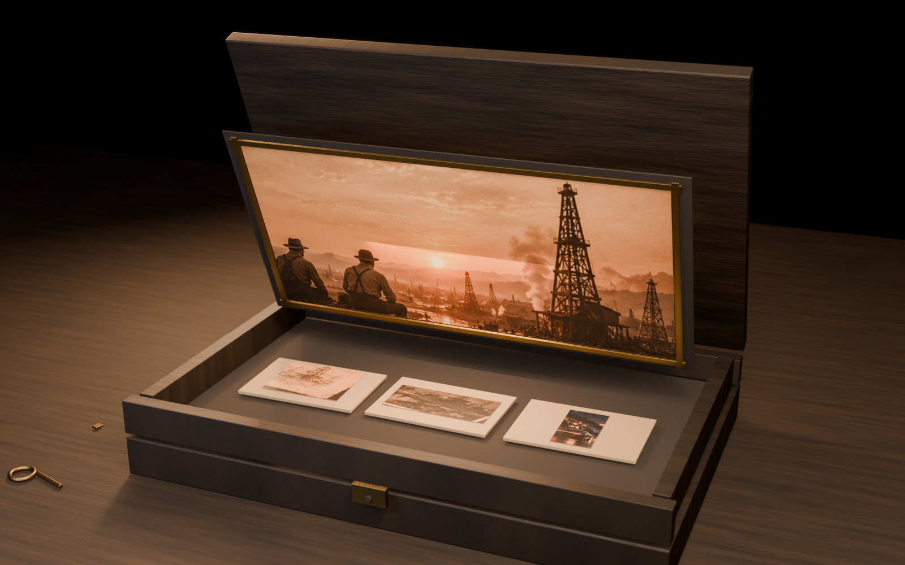
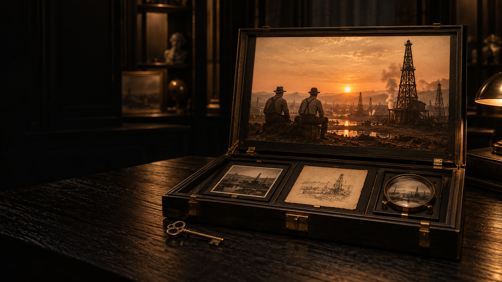
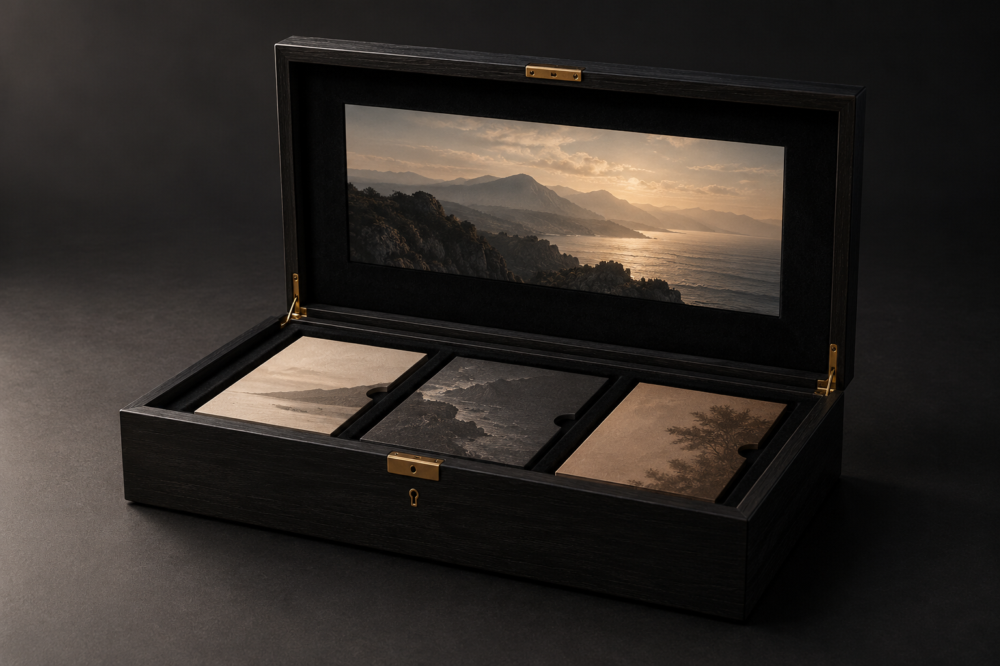
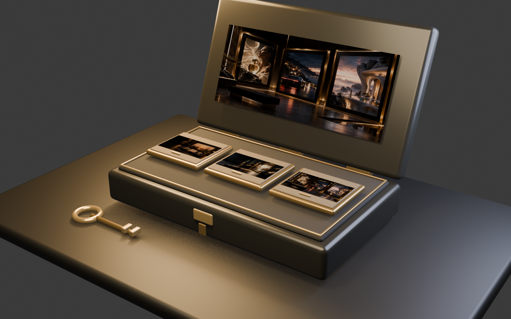
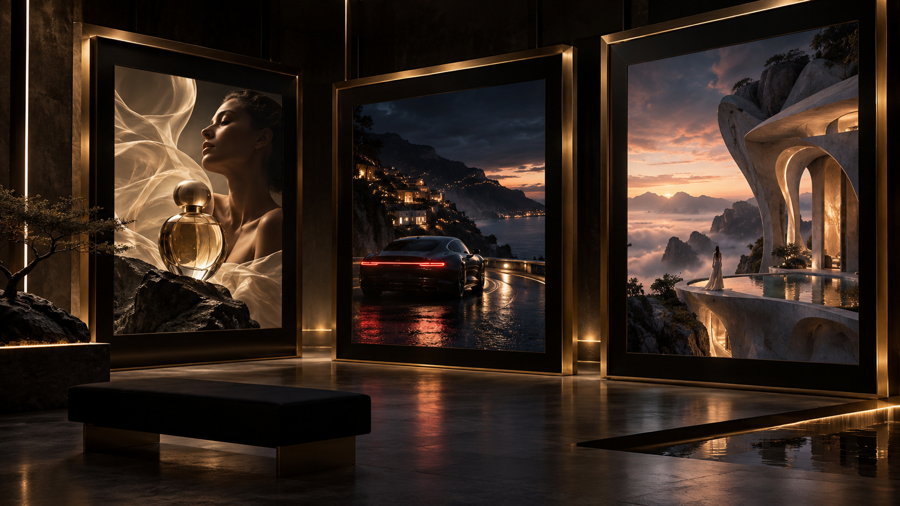
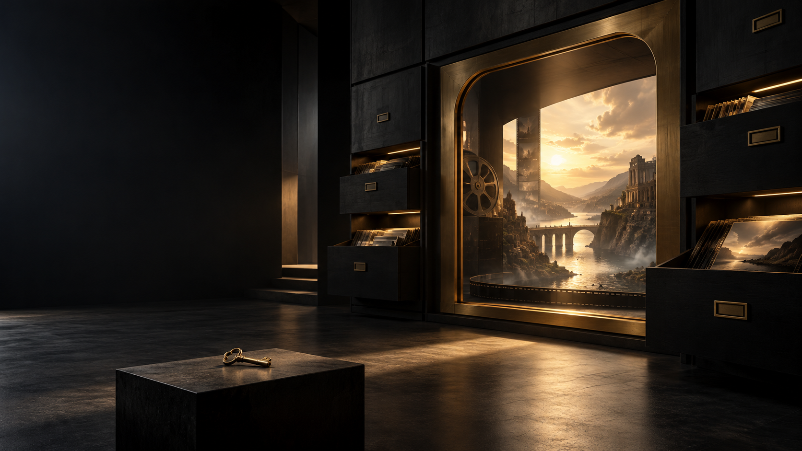
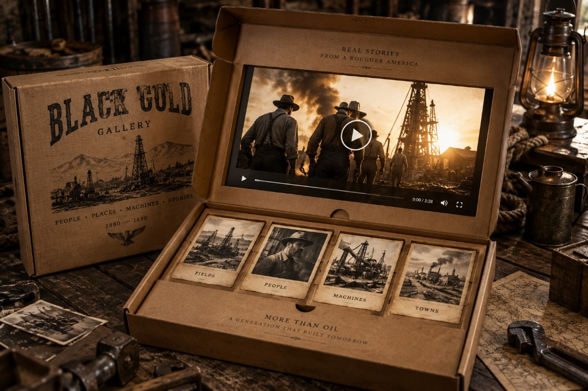

Чёрный футляр, внутри авторский фильм
Корпус и ключ — из премиального концепта. Кадр в крышке и бумажные карточки — из архива. Это направление, не финальная модель: рамка ещё чуть отстаёт от крышки, отпечатки на карточках временные.

Чёрный архив и ключ
Премиальный футляр: чёрное дерево, латунь, ключ как знак студии. Нефтяное поле здесь один из фильмов внутри архива, а не стиль всего сайта. Рядом могут стоять духи, автомобиль, архитектура — разные миры в одной чёрной раме. Анимации камеры нет, только неподвижный кадр из Blender.






Файлы: clave-archive-scene.blend, clave-archive-assets.glb, clave-archive-scene-preview.png
Картонный лофт, Black Gold
Ваш референс: открытая картонная коробка на столе, сепия, нефтяной Запад 1880-х, фонарь, инструмент, грубый лофт. Стиль один на весь сайт, мужской и предметный. В Blender уже есть пролёт камеры на 6 секунд, но сцена светлее и проще референса: картон читается как светлое дерево, лофта вокруг нет, реквизит из простых фигур.


Файлы: clave-western-archive.blend, clave-western-archive.glb, clave-western-archive-camera-flythrough.mp4